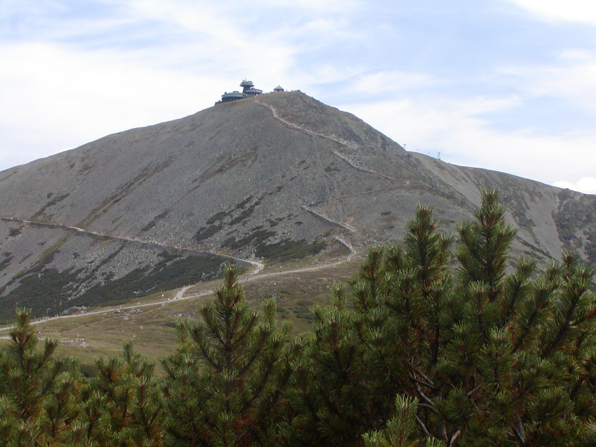
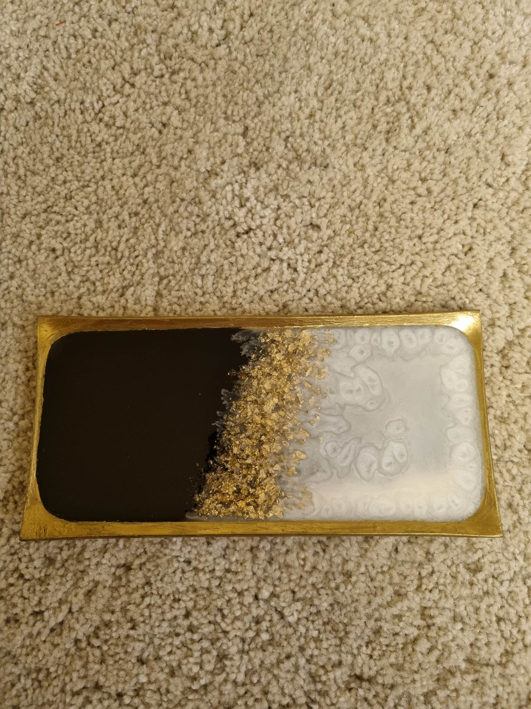
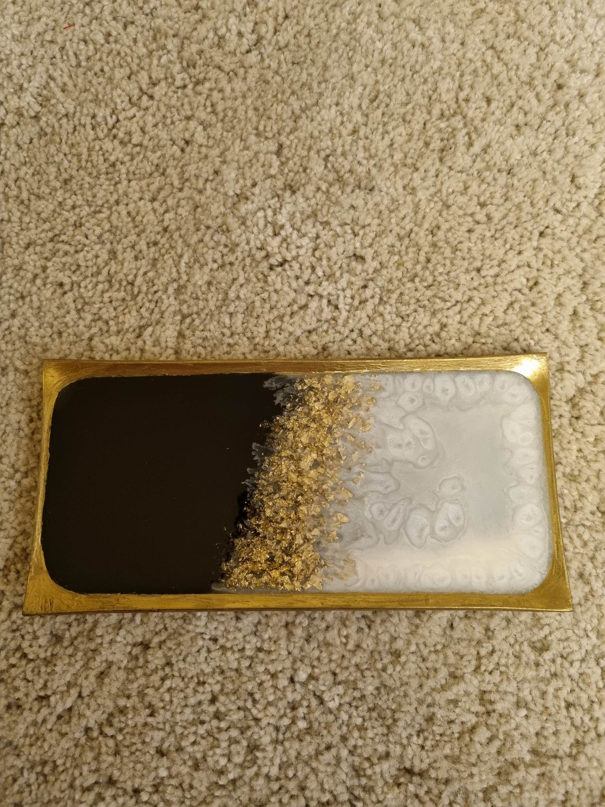
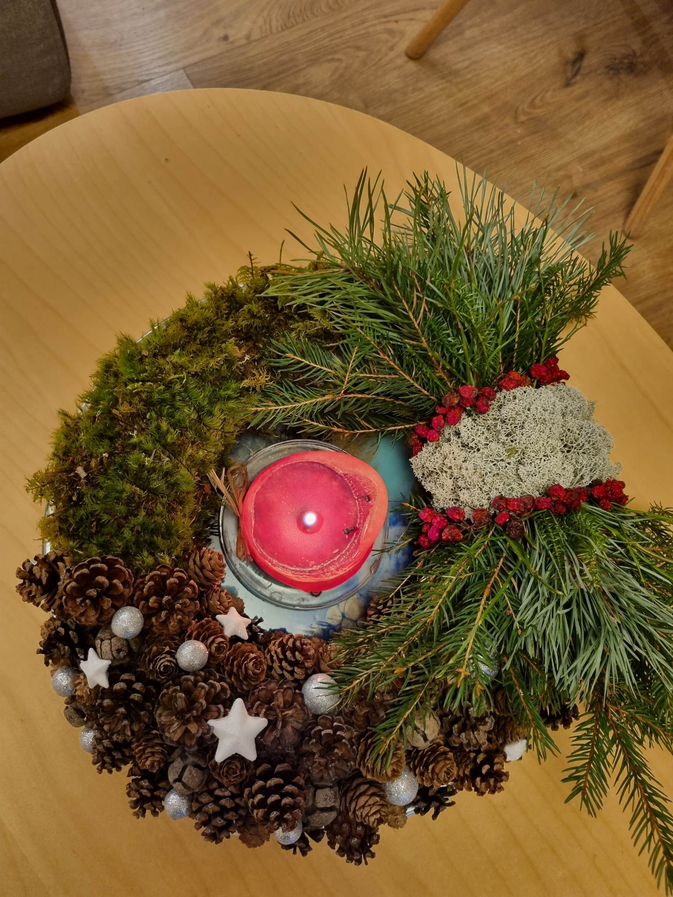
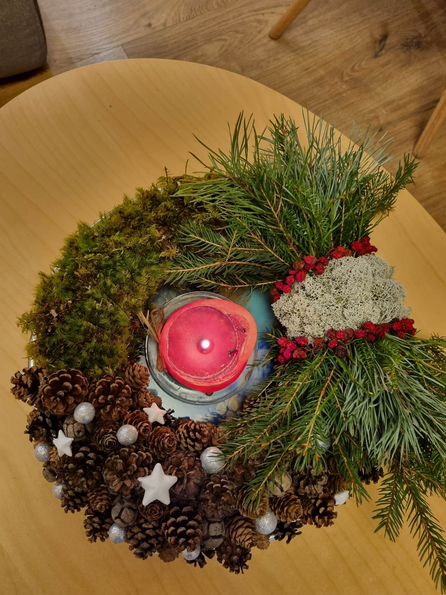

Kelionės
Čekija
Kelionės data - nuo 2022-11-01 iki 2022-11-05.Kelionės tikslas: aukščiausia Čekijos viršukalnė Snežka (aukštis - 1603 m.). Į kalną lipome pėsčiomis kalnų takeliais bei uolomis.
Taip pat vykome į Čekijos sostinę - Prahą. Prahoje pamatėme Senamiesčio tilto bokštą, Karolio tiltą, Šv. Vito katedrą (Chram sv. Vita), Senamiesčio katedrą, Astronominį laikrodį.
 Daugiau informacijos apie
lankytinus objektus
Prahoje
Daugiau informacijos apie
lankytinus objektus
Prahoje
Kelionės metu taip pat buvo aplankytos Adršpadų ir Teplice uolos.

Kreta
Kreta – pati didžiausia Graikijos sala, kurią skalauja keturios jūros – Egėjo, Kretos, Libijos ir Jonijos, – yra beveik tokiu pačiu atstumu nuo trijų žemynų – Europos, Azijos ir Afrikos. Kreta garsėja svetingumu, puikia infrastruktūra savarankiškam keliavimui ir, žinoma, puikiu oru bei gražia gamta ir paplūdimiais. Atstumai tarp lankytinų objektų čia nėra labai dideli, todėl saloje populiaru išsinuomoti automobilį ir aplankyti visas norimas vietas savarankiškai. Atvykus į Kretą tikrai nustebins kalnuotas gamtovaizdis su daugybe paplūdimių, kurių dauguma yra labai skirtingi ir savotiškai žavūs. Salą supa gražios įlankos, miestai ir jaukūs, žavingi kaimeliai, miesteliai bei vienos iškiliausių civilizacijų – Minų civilizacijos – griuvėsių vaizdai ir įdomus naktinis gyvenimas. Kodėl verta aplankyti Kretą? Vienos kelionės metu galima pabūvoti net prie keturių jūrų, aplankyti įvairius pablūdimius (Matala, Balos lagūna,Elafonissi,Praveli, Vai), paragauti gurmaniškos graikiškos virtuvės patiekalų ir paskanauti gėrimų, išmokti šokti sirtakį, aplankyti dievo Dzeuso gimimo vietą, Knoso (Knossos) rūmus. Ne veltui žymus graikų rašytojas Nikos Kazantzakis kadaise yra pasakęs, jog „Kreta tai ne sala, tai sielos būsena”. Kreta tinka absoliučiai visokiam poilsiui. Čia taip pat galima pamatyti Samarijos tarpeklį bei nusileisti juo 16 km. trasa. Čia galima rasti trankiausių barų gatvių, pašėlusių vakarėlių arba ramiam poilsiui tinkamų kurortinių miestelių, romantikos iškotojams sukurtų gyvenviečių.
 Daugiau informacijos rasite čia
Daugiau informacijos rasite čia
Latvija
Kelionės į Latviją metu galima aplankyti Baltijos jūros paplūdimius bei Gaujos nacionalinį parką, kuriame be gamtos, piliakalnių, mūrinių pilių, bažnyčių, dvarų, vandens ir vėjo malūnų bei kitų archeologijos, architektūros ir meno paminklų įrengtas takas, kuriuo einant galima susipažinti su aplinka. Beveik tris kilometrus besitęsiantis takas sudarytas iš smėlio, keramzito, kaštonų, medžio žievės, stiklo rutuliukų ir daugelio kitų elementų. Gaujos nacionaliniame parke yra sudaryti maršrutai kelionėms automobiliu, pėsčiomis ir dviračiu, įrengtos stovyklavietės ir nakvynės vietos vandens turistams Gaujos, Amatos ir Braslos pakrantėse. Taip pat neatsiejama kelionės dalis - nuvykimas į Rygą, kurios senamiestis įtrauktas į UNESCO saugomų objektų sąrašą kaip eksponuojantis didžiausią Europoje Art Noveau architektūros pastatų kolekciją

 


.jpg) 
